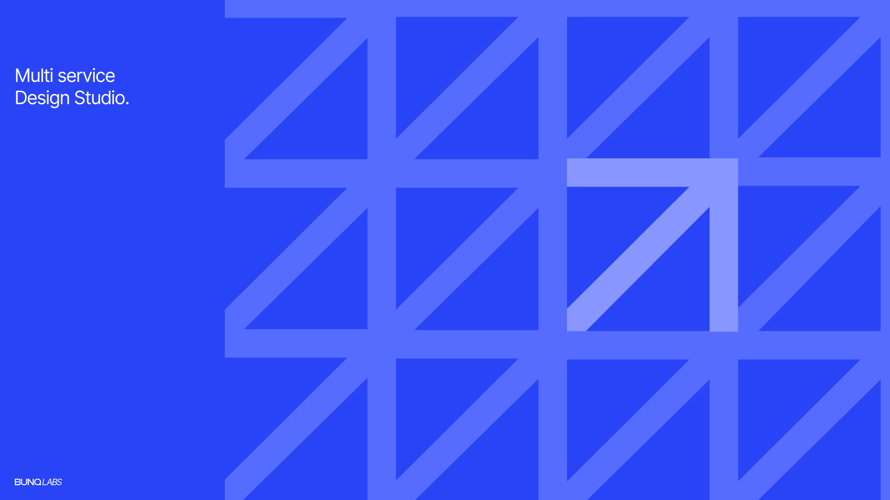
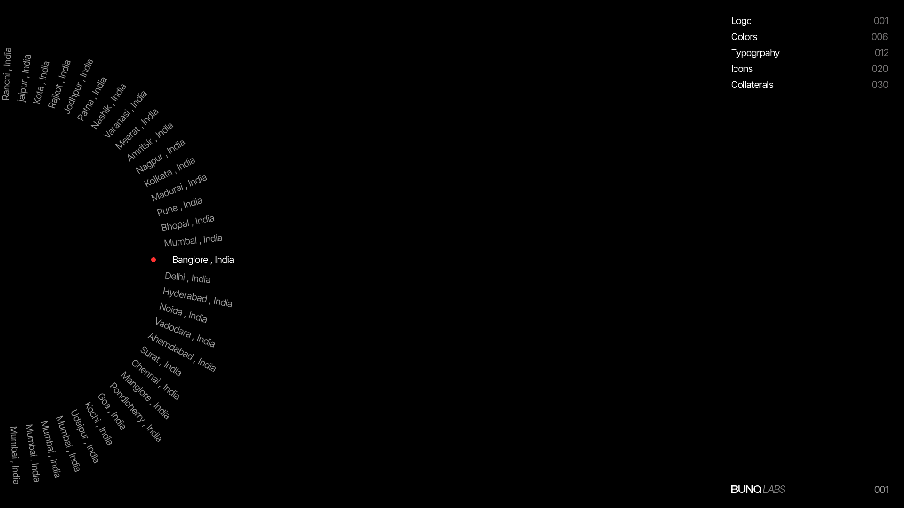
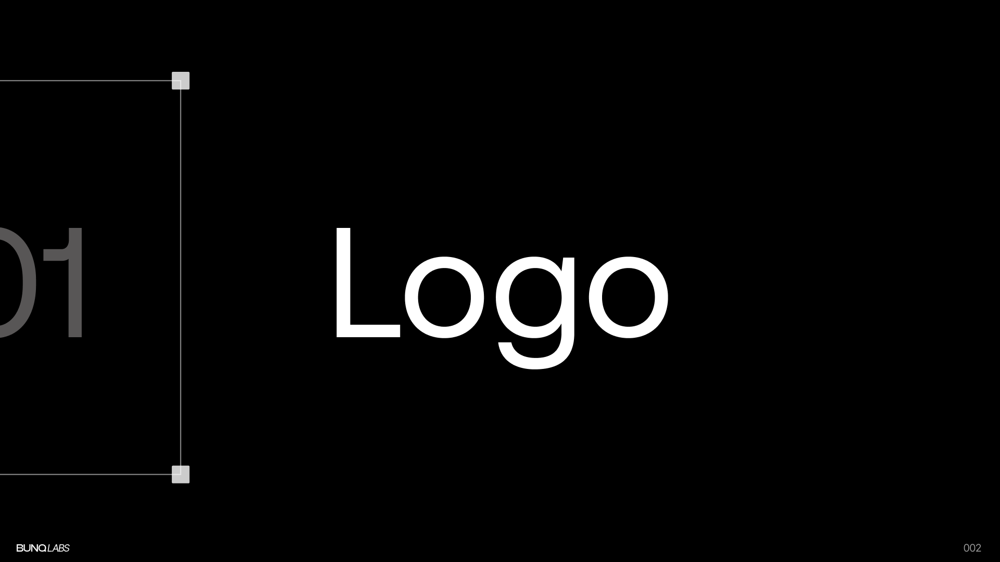
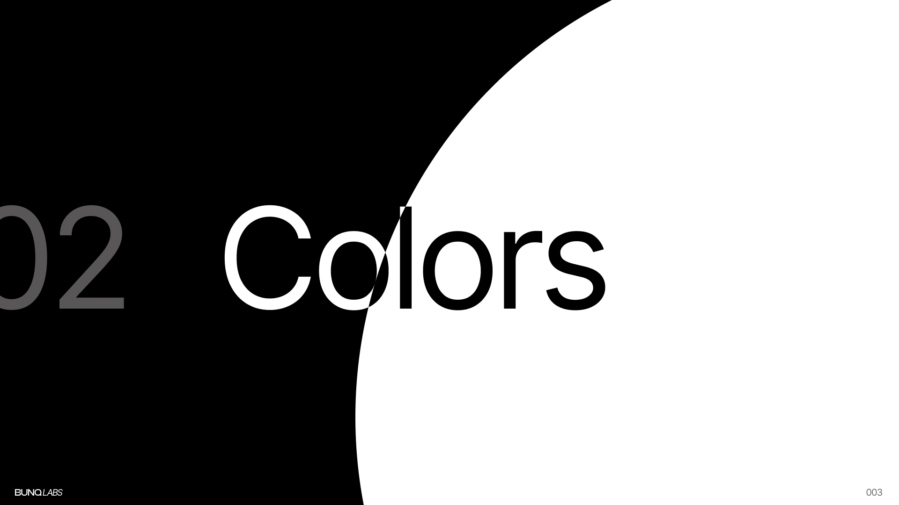
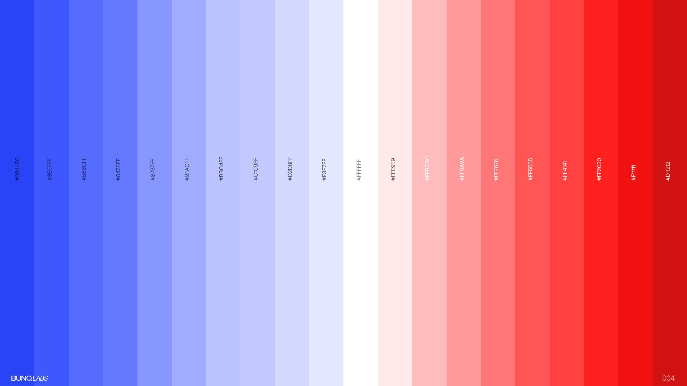
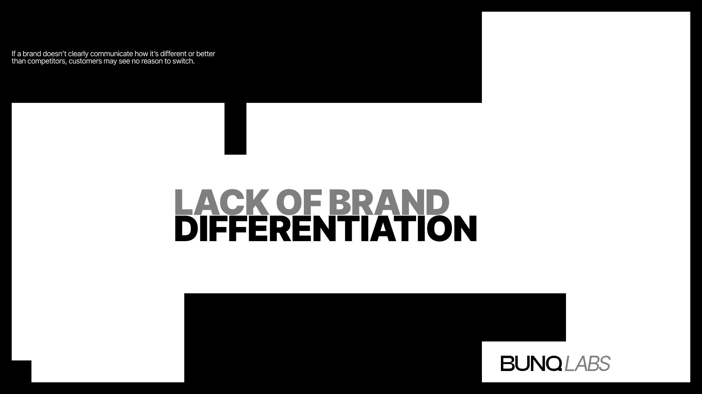
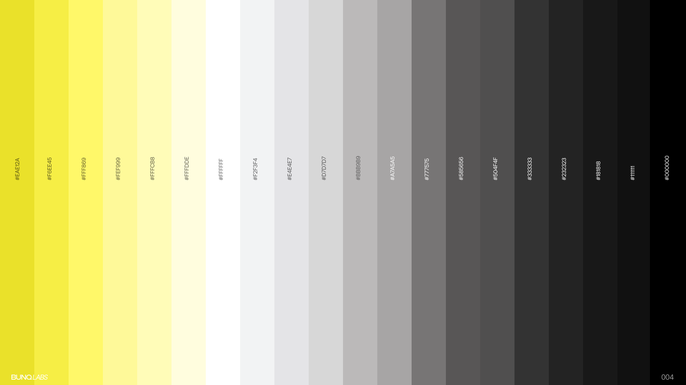
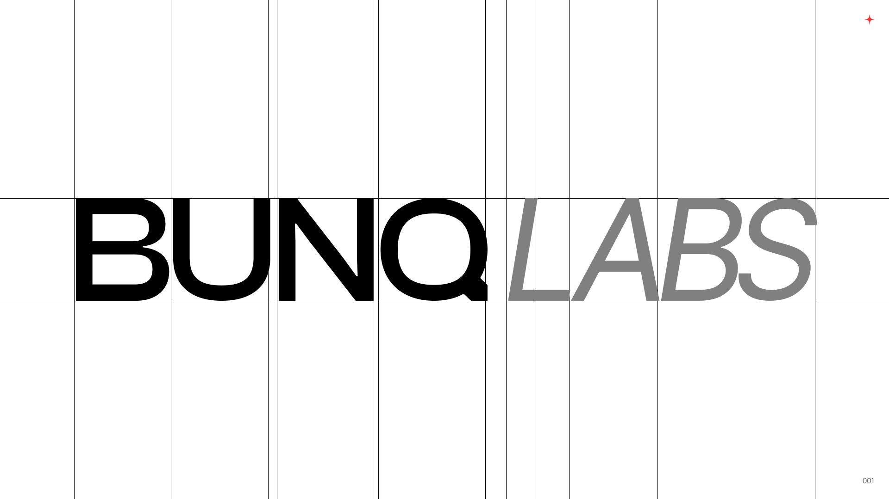
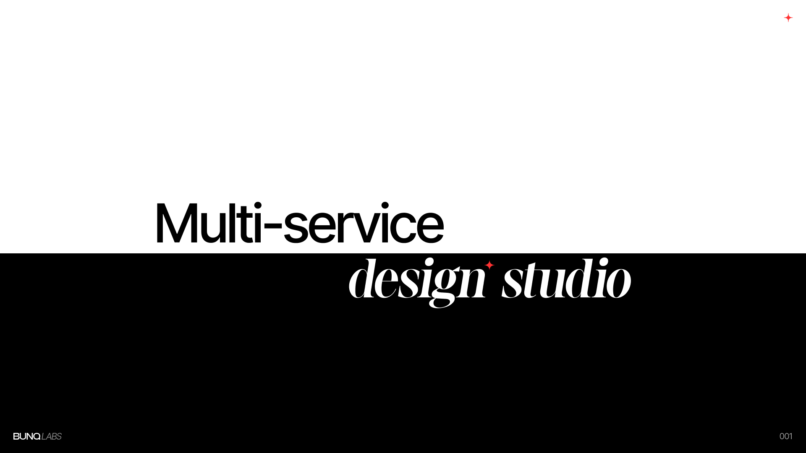

A visual exploration built around modular forms, structured grids, and high-contrast typography.
BunqLabs is a conceptual multi-service design studio created as an exercise in building a flexible visual identity system. The project focuses on repetition, rhythm, and scalable brand elements that can evolve across different mediums while maintaining a strong visual presence.
The Idea
The goal was to explore how a simple geometric system could generate a recognizable identity without relying on excessive visual complexity.
Rather than creating a fixed logo-first brand, the exploration focused on developing a visual language that could expand through patterns, typography, color systems, and composition.
Visual Direction
The identity is built around three core principles:
-
Modularity — A repeating geometric structure forms the foundation of the system, allowing layouts and assets to feel connected across applications.
-
Contrast — Bold typography and large-scale compositions create visual impact while maintaining clarity.
-
Flexibility — The system adapts across different formats without losing consistency, making it suitable for both digital and print environments.

Geometric System
The foundation of the identity comes from a simple angular form repeated across a structured grid.
By treating the shape as a building block rather than a decorative element, the system creates endless visual variations while preserving a recognizable rhythm.
The resulting patterns introduce movement and depth without requiring additional graphic complexity.

Typography
Typography acts as a primary branding element throughout the exploration.
Large-scale type, generous spacing, and intentional alignment create a sense of structure while allowing the visual system to remain clean and highly legible.
The balance between expressive headlines and restrained layouts helps establish a contemporary studio aesthetic.

Color Exploration
Color was explored as a functional layer within the identity system.
Instead of relying on a single palette, multiple tonal studies were created to understand how the visual language behaves under different moods and contexts.
From vibrant electric blues to monochromatic neutrals and warm yellows, each palette shifts the personality of the system while maintaining consistency in form.


Brand Differentiation
A major focus of the project was creating distinction through systems rather than isolated assets.
The identity demonstrates how repeated structures, consistent spacing, and visual restraint can establish recognition without depending on overly complex branding devices.

Logo Development
The wordmark was refined using grid-based alignment and proportional adjustments.
The process focused on achieving balance between precision and visual character while ensuring the mark could work effectively across both large-scale and compact applications.

Outcome
BunqLabs became an exploration of how graphic systems can create strong visual recognition through repetition, structure, and consistency.
Rather than designing a traditional brand identity, the project investigates how patterns, typography, and modular design principles can work together to form a cohesive visual language.

Final Thoughts
This project was an opportunity to experiment with visual systems, composition, and identity design beyond practical constraints.
The result is a flexible graphic language that feels bold, modern, and adaptable across a wide range of future applications.